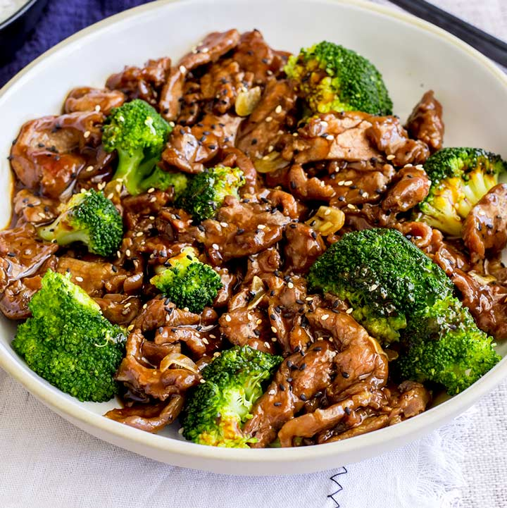

Chinese Beef and Broccoli

Description
Chinese beef and broccoli is a staple in Chinese take-out.
This quick and easy to cook dish is not only mouth watering,
but is also a healthy meal to serve to your family and friends.
Ingredients
Meat and Marinade
- 450 g boneless flank steak or skirt steak
- 1 tablespoon soy sauce
- 1 tablespoon peanut
- 1 tablespoon cornstarch
- 1/2 teaspoon baking soda
Sauce
- 1/2 cup chicken stock
- 2 tablespoons shaoxing wine
- 2 tablespoons soy sauce
- 1 teaspoon dark soy sauce
- 2 teaspoons brown sugar
- 1 tablespoon cornstarch
Stir-fry
- 1 head broccoli
- 1 tablespoon peanut oil
- 3 minced garlic cloves
- 2 teaspoons minced ginger
Steps
Slice the beef against the grain into slices.
Transfer to a small bowl. Add soy sauce, peanut oil,
and cornstarch. Gently mix well by hand
until all the slices are coated with a thin layer of sauce.
Marinate for 10 minutes while preparing the other ingredients.
Combine all the ingredients for the sauce in a medium-sized bowl. Mix well.
-
Add 1/4 cup water into a large nonstick skillet over
medium-high heat until the water begins to boil.
Add the broccoli and cover. Steam until the broccoli
just turns tender and the water evaporates,1 minute or so.
Transfer broccoli to a plate. Wipe the pan with a paper towel
held in a pair of tongs if there’s any water left.
-
Add the oil and swirl to coat the bottom.
Spread the steak in a single layer. Allow to cook
without touching for 30 seconds, or until the bottom
side is browned. Flip to cook the other side for a few seconds.
Stir and cook until the surface is lightly charred and the inside
is still pink.
-
Add the garlic and ginger.
Stir a few times to release the flavor and fragrance.
-
Return the broccoli to the pan.
Stir the sauce again to dissolve the cornstarch completely
and pour it into the skillet. Cook and stir until the sauce thickens,
about 1 minute. Transfer everything to a plate immediately.
Serve hot as a main dish.